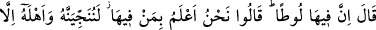
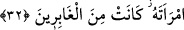
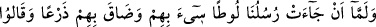
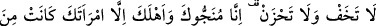
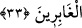

32. (İbrahim) dedi ki: Ama orada Lût var! Şöyle cevap verdiler: Biz orada
kimlerin bulunduğunu çok iyi biliyoruz. Onu ve ailesini elbette kurtaracağız. Yalnız
karısı müstesna; o, (azapta) kalacaklar arasındadır.
“(İbrahim)” oradaki müminlere şefkat ve merhametinden dolayı, gelen elçilerle
münakaşaya girdi ve “dedi ki:”
“Ama orada Lût var!” Orayı nasıl helâk edersiniz?
Lût (a.s)’a “Lût” denilmesinin sebebi; onun muhabbet ve sevgisi, amcası İbrâhim
(a.s.)’ın kalbine girmesinden dolayıdır. Çünkü İbrâhim (a.s.), Lût (a.s)’ı aşırı derecede
severdi.
Melekler “şöyle cevap verdiler: Biz orada kimlerin bulunduğunu çok iyi biliyoruz.”
Biz oradaki halkı senden daha iyi biliyoruz. Lût’un hâlinden de gafil değiliz. Sen bir
mü’minin zulme uğrayacağından korkma! Biz “onu ve ailesini” ve ona tabî olan
müminleri “elbette kurtaracağız. Yalnız karısı müstesnâ; o, (azapta) kalacaklar
arasındadır.”
Yani, söyleyeceğiz ki Lut kavminin arasından çıksın; kavminin arasında kalıp onlarla
birlikte helâk olacak olan eşi dışında ehli ve ona inananlar da çıksınlar.
33. Elçilerimiz Lût’a gelince, Lût onlar hakkında tasalandı ve (onları korumak
için) ne yapacağını bilemedi. Ona: Korkma, tasalanma! Çünkü biz seni de aileni de
kurtaracağız. Yalnız, (azapta) kalacaklar arasında bulunan karın müstesna, dediler.
İbrâhim (a.s)’dan ayrılan “elçilerimiz” yâni melekler Lût’a gelince, kavminin, onlara
karşı bir sarkıntılık yapmasından korktuğu için Lût onlar hakkında tasalandı, içi
daraldı ve (onları korumak için) ne yapacağını bilemedi.” Onlara gitmelerini mi
söylemeliydi yoksa misafir olarak kalmalarını mı bilemedi. Çünkü onlar genellikle
yabancılara karşı bu şekilde taşkınlık yaparlardı. Lût (a.s.) gelenlerin melekler
olduğunu anlayamadı; onları temiz, güzel kokulu elbiseler giyinmiş yakışıklı gençler
olarak gördü ve onları insan zannetti.
“”, sıladır; iki fiili ve aradaki bağı kuvvetlendirmek içindir.